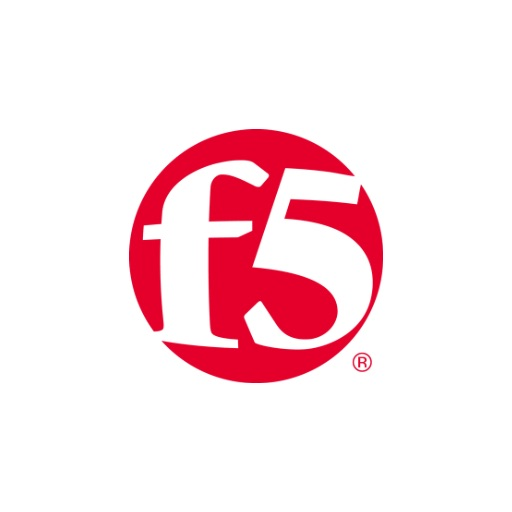
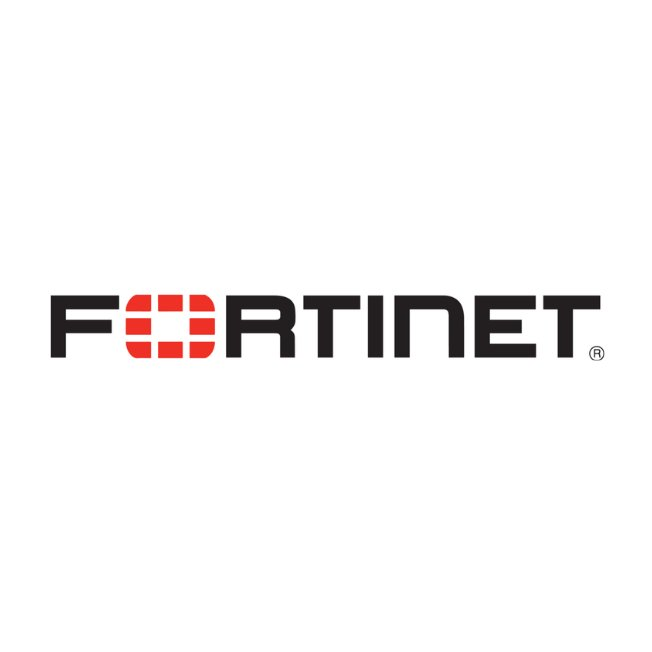
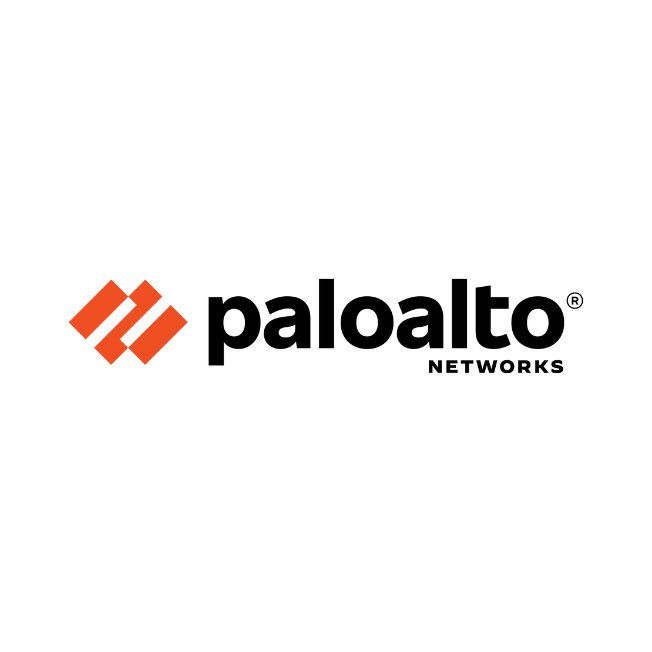
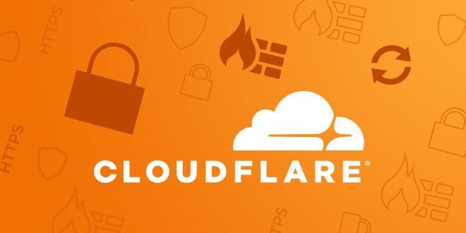

Senior Network & Security Engineer
Especialista en F5, Fortinet, Palo Alto Networks y Cloudflare. Experiencia en WAF, ADC, Balanceo de Carga, DNS, VPN, Seguridad Perimetral y Arquitecturas Empresariales.
Contactar



Soy un dedicado profesional autodidacta, que logra cumplir los objetivos propuestos en los tiempos planificados en cada proyecto asignado. Todos los clientes que administro a nivel de soporte siempre quedan satisfechos, porque logro diagnosticar y resolver los problemas de inmediato, además del desarrollo de implementación de pruebas de conceptos de pre venta.
Especialista en telecomunicaciones con más de 15 años de experiencia en tecnología Cisco, F5 Network, Imperva, CheckPoint, Sophos, Palo Alto, Fortinet, Netskope, ademas de Telefonía IP con Asterisk y Elastic, Arquitectura de servidores Windows y Linux, como también programación en Python, Power Shell, HTTP, CSS y Java Script.
Email: esinche@edward-solutions.net